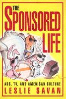

Exposing advertising's inner workings
Exposing advertising's inner workings


 Exposing advertising's inner workings
Exposing advertising's inner workings

|  |
The Sponsored LifeAds, TV, and American CultureLeslie Savanpaper EAN: 978-1-56639-245-7 (ISBN: 1-56639-245-4) |
"Savan straps one ad campaign after another to here lab table and dissects each with humor, insight and a healthy dose of rage....This thoughtful collection will appeal to anyone concerned with how ads work, what they're hiding and why they have such a hold on us."
—Publishers Weekly
How does a blatant lying in TV commercials—like Joe Isuzu's manic claims—create public trust in a product or a company? How does a company associated with a disaster, Exxon or Du Pont for example, restore its reputation? What is the real story behind the rendering of the now infamous Joe Camel? And what is the deeper meaning of living in an ad, ad, ad world? For a decade, journalist Leslie Savan has been exposing the techniques used by advertisers to push products and pump up corporate images. In the lively essays in this collection, Savan penetrates beneath the slick surfaces of specific ads and marketing campaigns to show how they reflect and shape consumer desires.
Savan's interviews with ad agencies and corporate clients—along with her insightful analyses of influential TV sports—reveal how successful advertising works. Ads do more than command attention. They are signposts to the political, cultural, and social trends that infiltrate the individual consumer's psyche. Think of the products associated with corporate mascots—the drum-beating bunny, the cereal-pushing tiger, the doughboy—that have become pop culture icons. Think cool. Think of the clothing manufacturer that uses multiracial imagery. Think progressive. Buy their worldview, buy their product. When virtually every product can be associate with some positive self-image, we are subtly refashioned into the advertiser's concept of a good citizen. Like it or not, we lead "the sponsored life."
Excerpt available at www.temple.edu/tempress
"[A] smart, stingingly funny collection.... Ms. Savan brings to bear a pithy style, a peppery wit and an unerring moral compass that enables her to score hits on the corporate fictions that increasingly structure our world view.
—New York Times Book Review
"Her delectably sarcastic analyses offer disturbing insights into the images that millions of citizens seek to adopt."
—Los Angeles Times Book Review
"Savan has a keen eye for baloney, and she peels off layers of it to reveal the moldy Wonder Bread of corporate greed-without losing her sense of humor."
—UTNE Reader
"When, decades from now, historians look back and try to understand how advertising overwhelmed our culture in the 1980s, they will surely start by reading Leslie Savan's bright and trenchant reportage. For those likewise concerned right now, The Sponsored Life is an indispensable collection—as well-informed as the account of any cool insider, yet powerfully critical throughout."
—Mark Crispin Miller, Johns Hopkins University, author of Boxed In: The Culture of TV
"This is one of those books you see, and say, Oh! And just reach for and purchase without even thinking—the ultimate dream, no doubt, of the advertisers who generated the TV commercials she so crisply analyzes inside."
—Douglas Coupland, author of Generation X and Life After God
"Original. Provocative. Breathtakingly insightful."
—Kathleen Hall Jamieson, Dean, The Annenberg School for Communication, University of Pennsylvania
"Savan is one of the best new cultural critics—her voice is strong, clever; her writing has verve, passion; her quick and feisty rejoinders talk back to commerce.... By paying attention to social issues, particularly women and race, she makes us notice the politics at work in the spaces between news and entertainment."
—Patricia Mellencamp, University of Wisconsin-Milwaukee
Acknowledgments
The Bribed Soul
1. Too Cool for Words
This Typeface Is Changing Your Life •
The Neo-Calvinists •
Timekeeping Is Money •
In Living B&W •
Honest Engine •
Avant-Hard Sell •
Guess Again •
The Lifestyle Lifestyle •
On Background •
The Fat Lady Sings •
It's the Rote Thing to Do •
Titular Head •
Listless is More •
Local Anesthetic •
Bookends, Pods, and Piggybacks •
The Sound of Nine Ads Hyping •
Sneakers and Nothingness •
Heaven Can Bait •
Burying Messages
2. Corporate Image Adjustments
Soldiers of Fortune •
Born-Again Dow •
Real Forced •
Mr. Liberty •
Hands Down •
Touch-Feely, Inc. •
Defense Spending •
Rock of Agents •
Car-nal Knowledge •
Big Apple •
Mass Mascot •
Takeover Makeover •
Anxiety Calls •
Bull •
God's Little Agency •
The Tie-Ins that Bind •
The Brand with Two Brains •
Whom Ma Bell Tolls •
Beam Me Up •
Let's Face It •
Getting Carded •
Gotta Hack It
3. Real Problems, Surreal Ads
Du Pontificates •
Point of Purchase •
Forget the Dead Babies •
Uniform Standard •
Where the Boycotts Are •
30 Seconds Over Washington •
A Piece of the Wall •
Don't Leave Romania Without It •
The Face of the People •
Stay Hungary •
Puff Piece •
Toxic Moxie •
Hawking War •
Green Monsters •
War Is Bell •
Watts Nuke? •
Ad-Free Ads •
In the Red Again •
The Off-Road to Rio
4. Our Bodies, Our Sells
At the End of a Sentence •
The New, 1985 Crotch •
The Sound of Sexism •
A Hard Man is Easy to Find •
Wipe Out •
Wild Thing, I Think I Smell You •
Women Will Be Gals •
Flow Jobs •
The Trad Trade •
Cockers •
Ragtime •
Getting Olayed •
Leggo My Ego •
Demagaga •
Friend of Faux •
Operation Miscue •
Fear of Buying •
Boys Under the Hood
5. Shock of the Hue
Down and Out on Mad Ave •
Little White Lies •
Constructive Engagement Ring •
Cri de Coors •
Gut Reaction •
Cereal Rights •
Rube Barbs •
Addictions and the Drug War •
Shock of the Hue •
Be-Twixt and Be-Tween •
Rubber Sold •
Bash & Cash •
Buy-It Riot •
Logo-rrhea •
Generation X-Force
6. The Sponsored Life
On the Rox •
Rock Rolls Over •
Jean Pool •
Inner Tube •
Desperately Selling Soda •
The Afterschlock •
Hip Hop •
TV in Its Underwear •
Lemon-Fresh Apocalypse •
Miles to Go •
Modern Times •
Adblisters •
TVTV •
New Word Order •
Everything Must Go •
The Ad Mission •
Pop Culture
Index
 | Leslie Savan is the advertising columnist for The Village Voice and was twice a finalist for the Pulitzer Prize in criticism. |
General Interest
Mass Media and Communications
Culture and the Moving Image, edited by Robert Sklar.
The Culture and the Moving Image series, edited by Robert Sklar, seeks to publish innovative scholarship and criticism on cinema, television, and the culture of the moving image. The series will emphasize works that view these media in their broad cultural and social frameworks. Its themes will include a global perspective on the world-wide production of images; the links between film, television, and video art; a concern with issues of race, class, and gender; and an engagement with the growing convergence of history and theory in moving image studies.
© 2015 Temple University. All Rights Reserved. This page: http://www.temple.edu/tempress/titles/979_reg.html.